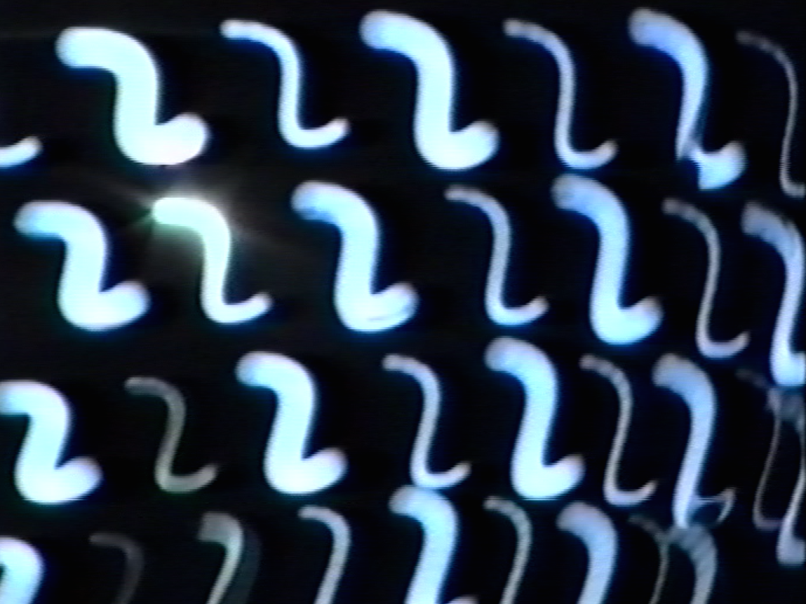

Just like true renegades musical outsiders always walk alone. Time, however, can become a weird and unpredictable ally. When yesterday’s unloved tune is transformed into a secret dj weapon in the blink of an eye, a change of context can breathe new life into the forgotten or give an unexpected chance to the fresh or the unknown. “Basic Moves” is an adventurous journey through the outer limits of house, techno and electro, inspired by an eclectic group of people and generations who share a real dedication to underground club music. Fresh or old tracks,current or unreleased gems,“Basic Moves” is a way to rephrase all of these sounds and influences while keeping an outsider’s spirit at heart.
